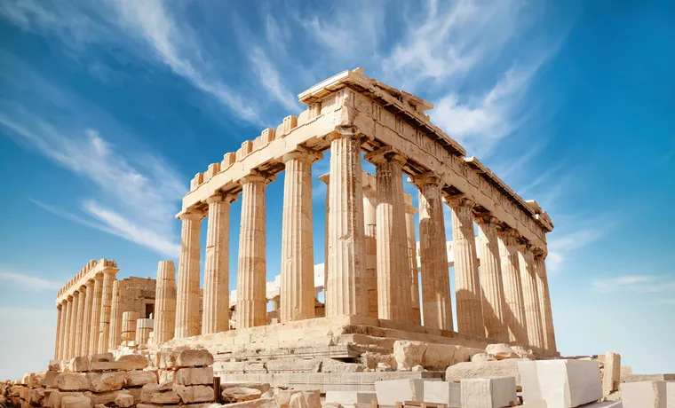

Grecia, es un país soberano, miembro de la Unión Europea.En el país viven alrededor de once millones de habitantes que conforman una sociedad muy homogénea, donde mayormente se habla el idioma griego y se practica el cristianismo ortodoxo.
El primer destino sería Santorini es un pequeño archipiélago circular formado por islas volcánicas, localizado en el sur del mar Egeo, a unos 200 km al sureste del territorio continental griego. Forma el grupo de islas más meridional de las Cícladas.
En santorini debo visitar Oía, La playa Roja, ver las puestas del sol, Caminar la ruta de Fira.
Tambien visitaria Atenas,es la capital de Grecia y actualmente la ciudad más grande del país. La población del municipio de Atenas era de 664 046 (en 2011), pero su área metropolitana es mucho mayor y comprende una población de 3,8 millones (en 2011). Es el centro principal de la vida económica, cultural y política griega.Allí conoceria lugares como: La Acrópolis, Templo de Zeus Olímpico,el Barrio de Plaka.
A este lugar me gustaria ir con mis padres, disfrutar de su arquitectura, conocer su cultura, su comida, ir a sus museos y conocer toda la historia de este pais.
El primer destino sería Santorini es un pequeño archipiélago circular formado por islas volcánicas, localizado en el sur del mar Egeo, a unos 200 km al sureste del territorio continental griego. Forma el grupo de islas más meridional de las Cícladas. En santorini debo visita Oía, La playa Roja, ver las puestas del sol, Caminar la ruta de Fira.

Tambien visitaria Atenas,es la capital de Grecia y actualmente la ciudad más grande del país. La población del municipio de Atenas era de 664 046 (en 2011), pero su área metropolitana es mucho mayor y comprende una población de 3,8 millones (en 2011). Es el centro principal de la vida económica, cultural y política griega.Allí conoceria lugares como: La Acrópolis, Templo de Zeus Olímpico,el Barrio de Plaka.
La gastronomía que quisiera disfrutar en este pais seria: Tzatziki: Salsa de yogur con pepino y ajo,Tyropita: Pasta rellena de queso feta, Spanokopita: Pasta rellena de espinacas, Spanakotiropites: Empanadillas de queso feta y espinacas,gyros: pan de pita relleno de carne asada (de pollo o cordero), tomate, cebolla y salsa, La mousakka: lasaña cuyos ingredientes son carne picada de cordero, berenjenas y tomate.